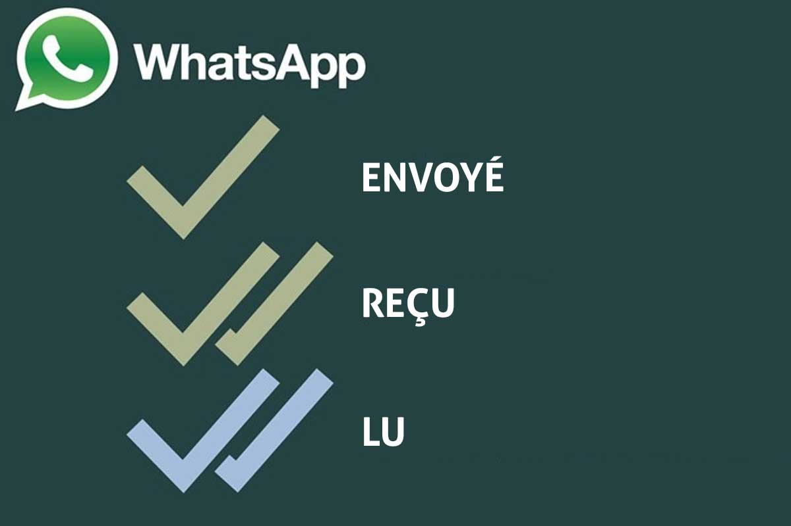

Aller en bas
Manière de protéger ses données
Grâce au chiffrement de bout à bout, Whatsapp s'asure que seulement vous et la personne avec qui vous converser puissse avoir accès à la conversation.
Il n'y a pas d'intermédiaire, pas même Whatsapp.
Paramètres, informations visibles/cachée
- Changement de photo de profil possible

- Modifier la possibilité de voir la présence en ligne

- Possibilité de cacher les infos de notre compte
- Possibilité de cacher les mise à jour de statut
- Possibilité de masquer les confirmations de lecture

- Possibilité de faire des appels à plusieurs ou de mettre des appels en mode silencieux
Les données exposées sur cette application appartiennent à Meta, possédant également le réseau social Facebook.
lien vers la page confidentialité de Whatsapp